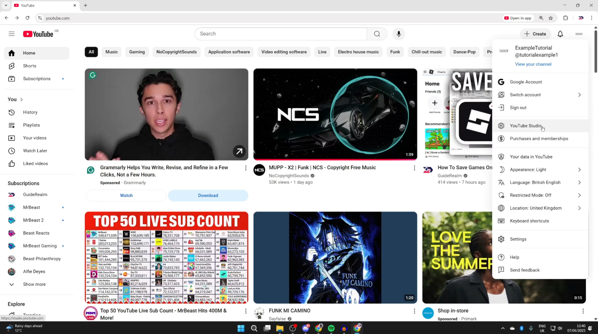
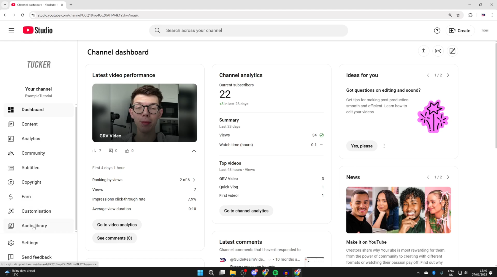
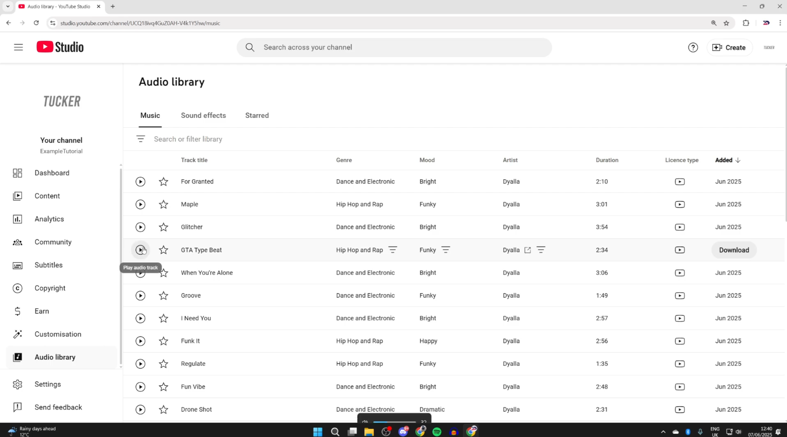
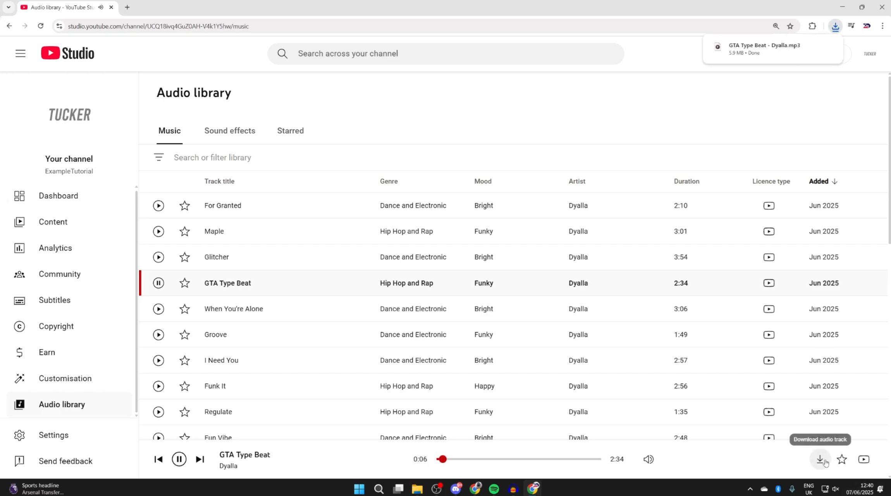

Most people don't know YouTube has its own youtube audio downloader built right into YouTube Studio. The Audio Library has hundreds of royalty-free tracks you can preview and download as MP3s — no extensions, no third-party websites needed.
Click your profile icon in the top right corner of YouTube, then select YouTube Studio from the dropdown.

In the left sidebar, scroll down and click Audio Library. You can filter tracks by Genre, Mood, or whether attribution is required.

Hit the play button on the left of any track to hear it before downloading.

Click the download icon on the right of the track. The MP3 file saves directly to your computer — no conversion needed.

Here's the honest truth: mainstream music on YouTube is copyrighted. Using third-party youtube-to-mp3 converter sites to rip those tracks violates YouTube's Terms of Service and copyright law — and many of those sites are loaded with malware and aggressive ads too.
The good news? There are clean, legal ways to get mainstream music as MP3 files — some even free. Here's what actually works:
Buy individual tracks starting at $1.29 and download them as high-quality files you own forever. Best option if you want permanent MP3 ownership of specific songs.
Purchase individual tracks from $0.99 in MP3 320kbps format. Amazon also has occasional $0.00 free track deals in their digital store worth checking.
Lets you download videos and music within the YouTube app for offline listening. Note: downloads are app-locked — you can't export them as MP3 files to your computer.
Download tracks for offline listening inside the app. Files are DRM-protected so they stay within Spotify — but it's the easiest way to listen offline on any device.
Subscribe and download songs directly to your device for offline listening. Works seamlessly on iPhone, Mac, and Windows via the Apple Music app.
Great for indie and independent artists — many offer free downloads or pay-what-you-want pricing. Downloads come as actual MP3 files you keep.
Yes — but only for tracks in YouTube's Audio Library. These are royalty-free tracks cleared by YouTube. Downloading copyrighted mainstream music from YouTube via third-party tools is against the rules.
For copyrighted music, no — it violates YouTube's Terms of Service and copyright law. Beyond the legal risk, many converter sites also pose real security risks like malware and aggressive ads.
Amazon Music's digital store regularly has tracks starting at $0.99, and sometimes offers free $0.00 downloads. iTunes is also a solid option at $1.29 per track with permanent ownership.
No. YouTube Premium downloads are app-locked — you can listen offline inside the YouTube app, but you can't export or save the files as MP3s to your computer.
Tracks from YouTube's Audio Library download directly as MP3 files — no conversion software needed.
Bottom line: For free tracks, YouTube's own Audio Library is the cleanest youtube audio download method out there. For mainstream music, skip the dodgy converter sites and just buy the track on iTunes or Amazon — it's cheap, safe, and legal.